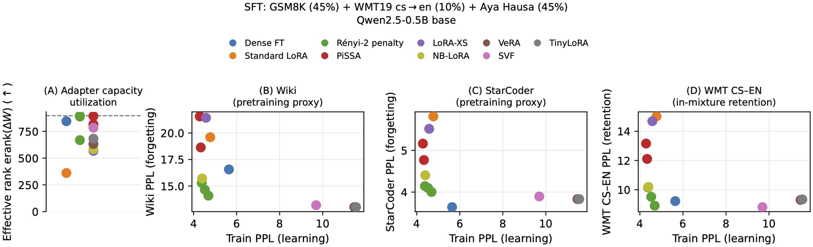
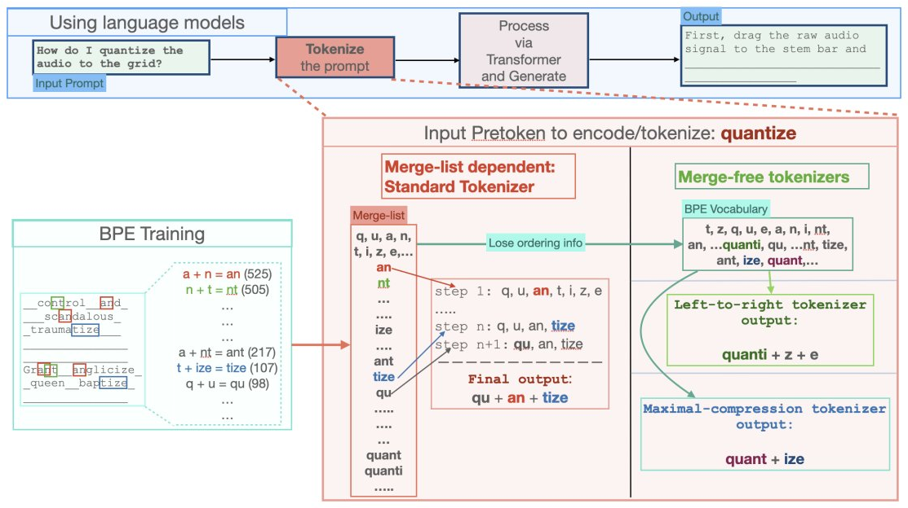
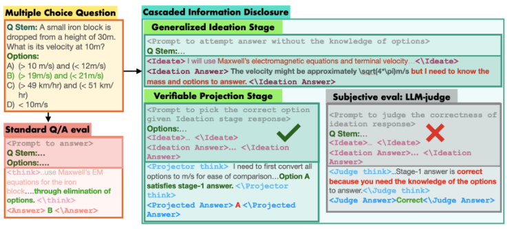

Papers I have worked on, newest first. The full list is on Google Scholar.
Developed an SVD-free Rényi-2 entropy penalty for LoRA. In mixed-domain fine-tuning of Qwen2.5-0.5B at fixed adapter rank r = 896, it raised mean effective rank from 361 to 888 and reduced Wiki perplexity from 19.60 to 14.65 and training perplexity from 4.77 to 4.53.

A pretrained LM tolerates a different tokenizer inference algorithm with no retraining: merge-list-free BPE encoders preserve QA and open-ended generation quality on Qwen2-7B, with modest drops on machine translation. Merge lists, which can leak information about training data, need not be shipped.

Evaluation framework that reveals a question in stages, separating free-form reasoning from answer selection. It narrows the between-model gaps seen under standard QA, suggesting standard QA overstates model differences.

Benchmark of advanced math, science, and law problems; GPT-4 and Claude scored below 50% on the harder tasks.